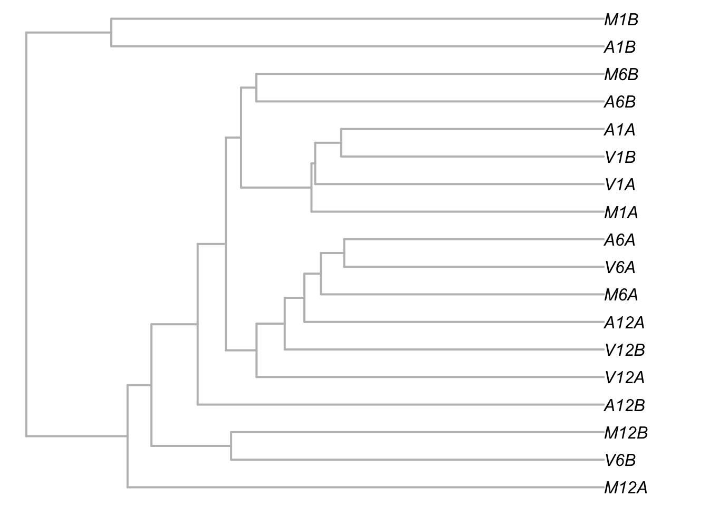
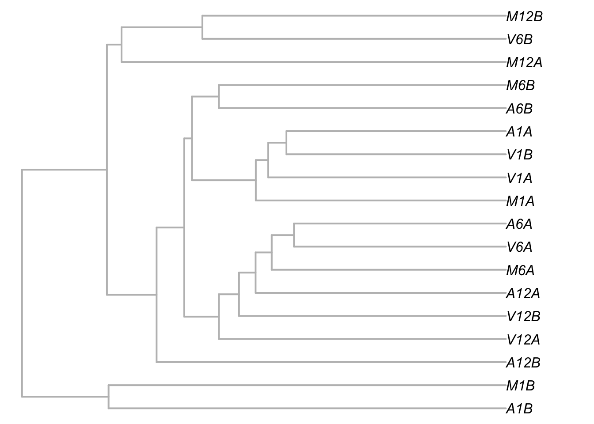
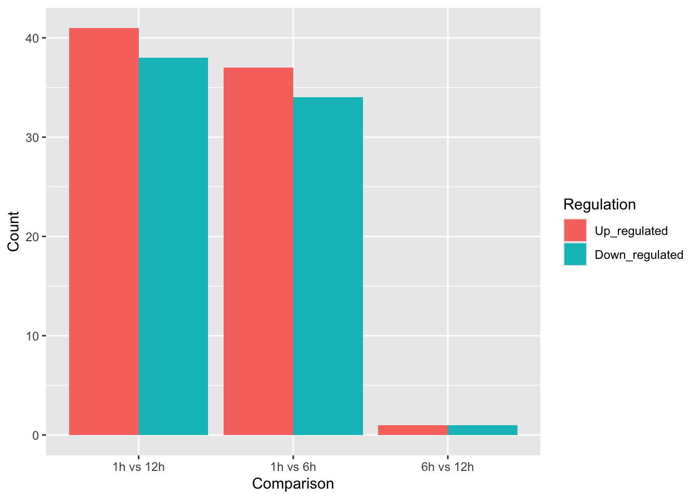

── Conflicts ────────────────────────────────────────── tidyverse_conflicts() ──
✖ dplyr::filter() masks stats::filter()
✖ dplyr::lag() masks stats::lag()
ℹ Use the conflicted package (<http://conflicted.r-lib.org/>) to force all conflicts to become errors
Warning: package 'DESeq2' was built under R version 4.4.1
Loading required package: S4Vectors
Warning: package 'S4Vectors' was built under R version 4.4.1
Warning: package 'BiocGenerics' was built under R version 4.4.1
Attaching package: 'BiocGenerics'
The following objects are masked from 'package:lubridate':
intersect, setdiff, union
The following objects are masked from 'package:dplyr':
combine, intersect, setdiff, union
The following objects are masked from 'package:stats':
IQR, mad, sd, var, xtabs
The following objects are masked from 'package:base':
anyDuplicated, aperm, append, as.data.frame, basename, cbind,
colnames, dirname, do.call, duplicated, eval, evalq, Filter, Find,
get, grep, grepl, intersect, is.unsorted, lapply, Map, mapply,
match, mget, order, paste, pmax, pmax.int, pmin, pmin.int,
Position, rank, rbind, Reduce, rownames, sapply, saveRDS, setdiff,
table, tapply, union, unique, unsplit, which.max, which.min
Attaching package: 'S4Vectors'
The following objects are masked from 'package:lubridate':
second, second<-
The following objects are masked from 'package:dplyr':
first, rename
The following object is masked from 'package:tidyr':
expand
The following object is masked from 'package:utils':
findMatches
The following objects are masked from 'package:base':
expand.grid, I, unname
Loading required package: IRanges
Warning: package 'IRanges' was built under R version 4.4.2
Attaching package: 'IRanges'
The following object is masked from 'package:lubridate':
%within%
The following objects are masked from 'package:dplyr':
collapse, desc, slice
The following object is masked from 'package:purrr':
reduce
Loading required package: GenomicRanges
Warning: package 'GenomicRanges' was built under R version 4.4.1
Loading required package: GenomeInfoDb
Warning: package 'GenomeInfoDb' was built under R version 4.4.2
Loading required package: SummarizedExperiment
Warning: package 'SummarizedExperiment' was built under R version 4.4.1
Loading required package: MatrixGenerics
Warning: package 'MatrixGenerics' was built under R version 4.4.2
Loading required package: matrixStats
Warning: package 'matrixStats' was built under R version 4.4.1
Warning: package 'Biobase' was built under R version 4.4.1
Welcome to Bioconductor
Vignettes contain introductory material; view with
'browseVignettes()'. To cite Bioconductor, see
'citation("Biobase")', and for packages 'citation("pkgname")'.
Attaching package: 'Biobase'
The following object is masked from 'package:MatrixGenerics':
rowMedians
The following objects are masked from 'package:matrixStats':
anyMissing, rowMedians
Warning: package 'DT' was built under R version 4.4.1
Warning: package 'pheatmap' was built under R version 4.4.1
Warning: package 'RColorBrewer' was built under R version 4.4.1
Warning: package 'EnhancedVolcano' was built under R version 4.4.1
Loading required package: ggrepel
Warning: package 'ggrepel' was built under R version 4.4.3
Warning: package 'ape' was built under R version 4.4.1
Attaching package: 'ape'
The following object is masked from 'package:dplyr':
where
# Create a metadata frame# Ensure the levels are set so 'Mock' is the reference (the baseline)colData <-data.frame(row.names =colnames(count_master),Condition =factor(rep(c("Virulent", "Avirulent", "Mock"), each =6), levels =c("Virulent", "Avirulent", "Mock")),Time =factor(rep(rep(c("12h", "1h", "6h"), each =2), 3)))
Part 4: Exploratory Data Analysis: Hierarchical Clustering
3. Task: Building the Dendrogram
# 1. Transform the data to stabilize variancevsd <-varianceStabilizingTransformation(dds, blind =FALSE)vsd_mat <-assay(vsd) # Extract the matrix of transformed values# 2. Calculate the distance between samples# We transpose the matrix with t() because dist() calculates distance between rowssample_dist <-dist(t(vsd_mat))# 3. Perform Hierarchical Clusteringclusters <-hclust(sample_dist)# 4. Plot the results using the ape package for a cleaner phylogenetic look# We convert the hclust object to a phylo object for professional plotting.# We map 'Condition' to 'tip.label' so the tree is easy to interpret.plot.phylo(as.phylo(clusters), tip.label = colData$Condition, type ="p", edge.col ="grey", edge.width =2,no.margin =TRUE)
Warning in plot.window(...): "tip.label" is not a graphical parameter
Warning in plot.xy(xy, type, ...): "tip.label" is not a graphical parameter
Warning in title(...): "tip.label" is not a graphical parameter

Look at the dendrogram. Do the replicates for the same condition (e.g., the two Mock samples at 1h) cluster together on the same small branches?
A lot of the clusters early in the infection are clustered together based on time and not condition, which the later hours’ clusters are based on condition. Early and late groups.
Do you see a clear split between the Mock group and the infected groups?
We can see some of the mock groups being clustered together with the infected groups, e.g. M6B and A6B since the initial injury looks the same.
If a sample is “out of place” (e.g., a Virulent sample sitting in the middle of the Mock branch), what might that suggest about the experiment?
That maybe the infection takes some time to take place and it takes time for the plant to express its defense genes. There are differences in the data.
vsd <-varianceStabilizingTransformation(dds2, blind =FALSE)vsd_mat <-assay(vsd) # Extract the matrix of transformed values# 2. Calculate the distance between samples# We transpose the matrix with t() because dist() calculates distance between rowssample_dist <-dist(t(vsd_mat))# 3. Perform Hierarchical Clusteringclusters <-hclust(sample_dist)# 4. Plot the results using the ape package for a cleaner phylogenetic look# We convert the hclust object to a phylo object for professional plotting.# We map 'Condition' to 'tip.label' so the tree is easy to interpret.plot.phylo(as.phylo(clusters), tip.label = colData$Time, type ="p", edge.col ="grey", edge.width =2,no.margin =TRUE)
Warning in plot.window(...): "tip.label" is not a graphical parameter
Warning in plot.xy(xy, type, ...): "tip.label" is not a graphical parameter
Warning in title(...): "tip.label" is not a graphical parameter

Part 5: The Main Event - Differential Expression
1. Running the Pipeline - our null hypothesis is that all genes are expressed the same.
# Assign the output to a new object to keep your original dds safedds_results <-DESeq(dds)
estimating size factors
estimating dispersions
gene-wise dispersion estimates
mean-dispersion relationship
final dispersion estimates
fitting model and testing
dds_results2 <-DESeq(dds2)
estimating size factors
estimating dispersions
gene-wise dispersion estimates
mean-dispersion relationship
final dispersion estimates
fitting model and testing
2. Extracting Specific Results
alpha is usually the p-value. Here alpha represents the your target False Discovery Rate (FDR). The proportion of false positives among all significant results. 20% of our significant genes with (0.05% p value for being deferentially expressed) might be false positives. Used the p-value to get significant ones and estimated the proportions of falsely discovered genes.
# Extract results for Avirulent vs. Mockres_avr_mock <-results(dds_results, contrast =c("Condition", "Avirulent", "Mock"), alpha =0.2)res_1h_12h <-results(dds_results2, contrast =c("Time", "1h", "12h"), alpha =0.2)# Print the first few rows to see the tableprint(res_avr_mock)
out of 6410 with nonzero total read count
adjusted p-value < 0.2
LFC > 0 (up) : 0, 0%
LFC < 0 (down) : 0, 0%
outliers [1] : 2, 0.031%
low counts [2] : 0, 0%
(mean count < 0)
[1] see 'cooksCutoff' argument of ?results
[2] see 'independentFiltering' argument of ?results
summary(res_vir_avr)
out of 6410 with nonzero total read count
adjusted p-value < 0.2
LFC > 0 (up) : 0, 0%
LFC < 0 (down) : 0, 0%
outliers [1] : 2, 0.031%
low counts [2] : 0, 0%
(mean count < 0)
[1] see 'cooksCutoff' argument of ?results
[2] see 'independentFiltering' argument of ?results
summary(res_1h_6h)
out of 6410 with nonzero total read count
adjusted p-value < 0.2
LFC > 0 (up) : 41, 0.64%
LFC < 0 (down) : 39, 0.61%
outliers [1] : 2, 0.031%
low counts [2] : 4126, 64%
(mean count < 0)
[1] see 'cooksCutoff' argument of ?results
[2] see 'independentFiltering' argument of ?results
summary(res_6h_12h)
out of 6410 with nonzero total read count
adjusted p-value < 0.2
LFC > 0 (up) : 1, 0.016%
LFC < 0 (down) : 1, 0.016%
outliers [1] : 2, 0.031%
low counts [2] : 0, 0%
(mean count < 0)
[1] see 'cooksCutoff' argument of ?results
[2] see 'independentFiltering' argument of ?results
Part 6: Filtering and Ranking
2. Automation with Custom Functions
# Function to filter and count DE genesfilter_and_count <-function(res_obj, comparison_name, fc_threshold =2) {# 1. Remove rows with NAs in padj res_filtered <- res_obj[!is.na(res_obj$padj) &!is.na(res_obj$log2FoldChange), ]# 2. Apply filters: |log2FC| >= log2(fc_threshold) and padj < 0.2# Note: 0.2 matches the alpha we set in our results() calls sig_genes <- res_filtered[abs(res_filtered$log2FoldChange) >=log2(fc_threshold) & res_filtered$padj <0.2, ]# 3. Count up and down regulated up_regulated <-sum(sig_genes$log2FoldChange >0) down_regulated <-sum(sig_genes$log2FoldChange <0)# Return as a clean data framereturn(data.frame(Comparison = comparison_name,Up_regulated = up_regulated,Down_regulated = down_regulated ))}
3. Generating the Global Summary
results_summary <-rbind(filter_and_count(res_1h_12h, "1h vs 12h"),filter_and_count(res_1h_6h, "1h vs 6h"),filter_and_count(res_6h_12h, "6h vs 12h"))results_summary2 <-rbind(filter_and_count(res_vir_mock, "Vir vs Mock"),filter_and_count(res_avr_mock, "Avr vs Mock"),filter_and_count(res_vir_avr, "Vir vs Avr"))# Inspect the final summary tableprint(results_summary2)
Comparison Up_regulated Down_regulated
1 Vir vs Mock 0 0
2 Avr vs Mock 0 0
3 Vir vs Avr 0 0
# Inspect the final summary tableprint(results_summary)
Comparison Up_regulated Down_regulated
1 1h vs 12h 41 38
2 1h vs 6h 37 34
3 6h vs 12h 1 1
# Step 1: Pivot the data to long formatplot_data <- results_summary %>%pivot_longer(cols =c(Up_regulated, Down_regulated), names_to ="Regulation", values_to ="Count") %>%mutate(Regulation =factor(Regulation, levels =c("Up_regulated", "Down_regulated")))# Step 2: Create a Bar Plot# Hint: Use aes(x = Comparison, y = Count, fill = Regulation) # and geom_bar(stat = "identity", position = "dodge")ggplot (plot_data, aes (x = Comparison, y = Count, fill = Regulation)) +geom_bar(stat ="identity", position ="dodge")

Final Submission
# YOUR TASK: Write the code to save your significant virulent genes to 'data/data_yourname/sig_virulent_genes.csv'filter_and_count2 <-function(res_obj, fc_threshold =2) {# 1. Remove rows with NAs in padj res_filtered <- res_obj[!is.na(res_obj$padj) &!is.na(res_obj$log2FoldChange), ]# 2. Apply filters: |log2FC| >= log2(fc_threshold) and padj < 0.2# Note: 0.2 matches the alpha we set in our results() calls sig_genes <- res_filtered[abs(res_filtered$log2FoldChange) >=log2(fc_threshold) & res_filtered$padj <0.2, ]return(sig_genes)}write.csv(filter_and_count2(res_1h_12h), "data/data_kimia/sig_1h_12h_genes.csv", row.names=TRUE) write.csv(filter_and_count2(res_1h_6h), "data/data_kimia/sig_1h_6h_genes.csv", row.names =TRUE)write.csv(filter_and_count2(res_6h_12h), "data/data_kimia/sig_6h_12h_genes.csv", row.names =TRUE)write.csv(res_1h_12h, "data/data_kimia/notsig_1h_12h_genes.csv", row.names =TRUE)write.csv(res_1h_6h, "data/data_kimia/notsig_1h_6h_genes.csv", row.names =TRUE)write.csv(res_6h_12h, "data/data_kimia/notsig_6h_12h_genes.csv", row.names =TRUE)